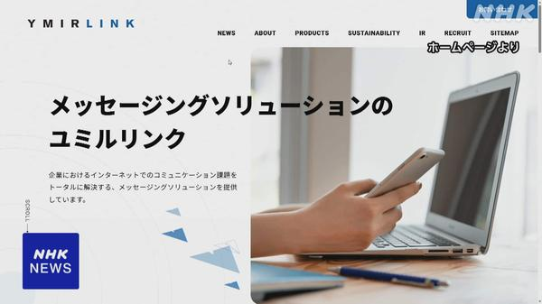
メール配信のユミルリンク、のべ5162万件の個人情報が流出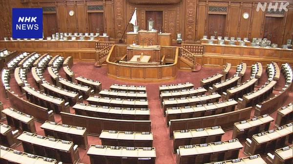
衆院定数「比例31削減」案、きょう与野党が協議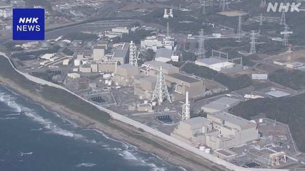
浜岡原発の運転差し止め訴訟、きょう静岡地裁で判決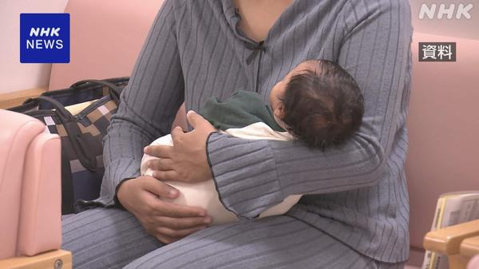
国内で生まれた外国人の子ども、3年連続で過去最多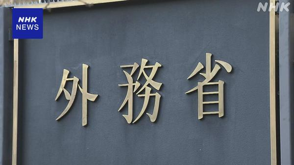
ロシアで拘束の北海道新聞記者と「領事面会」、健康に問題なし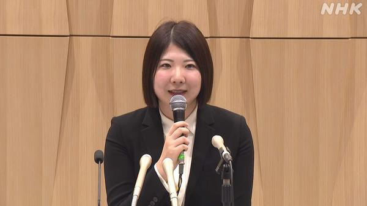
西山朋佳女流四冠がプロ入りを表明、史上初の女性プロ棋士へ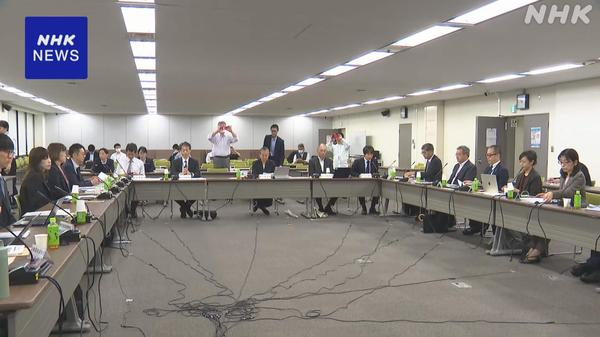
介護保険の負担見直し議論が本格化、金融所得の反映も検討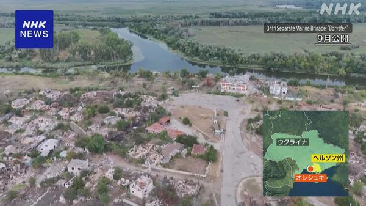
ロシアとウクライナの局地停戦、日本時間きょう午前10時発効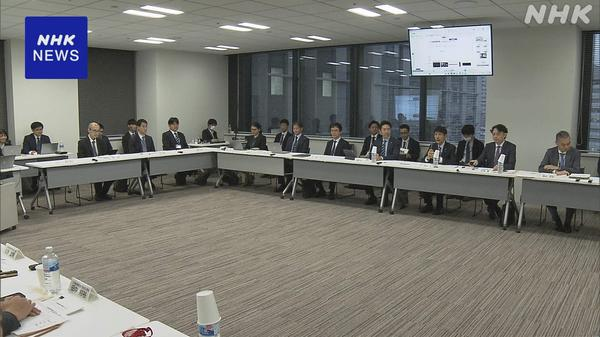
政府、AIのリスク対応で法改正の検討を開始へ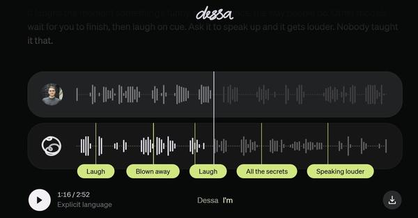
Block、人の会話音声だけで学習した音声モデル「Dessa」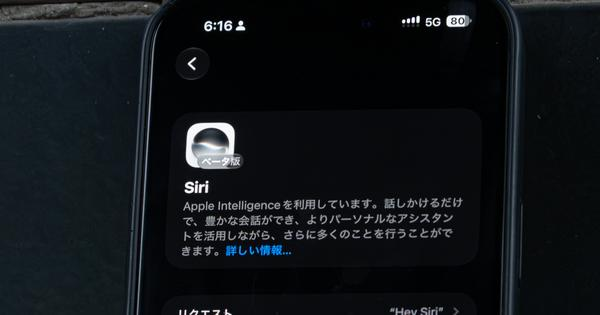
iOS 27.2で「Siri AI」が日本語に対応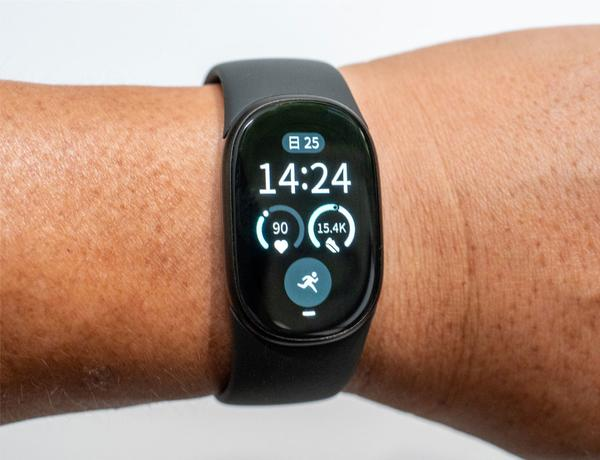
Google「Fitbit Edge」先行レビュー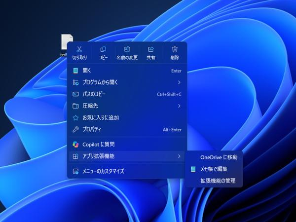
Windows 11の右クリックメニューがカスタマイズ可能に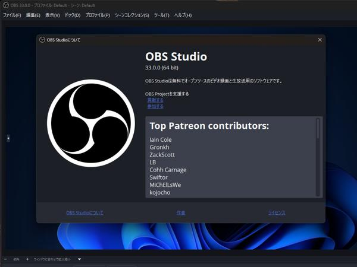
OBS Studio 33.0.0公開、Arm版WindowsでもNVENC対応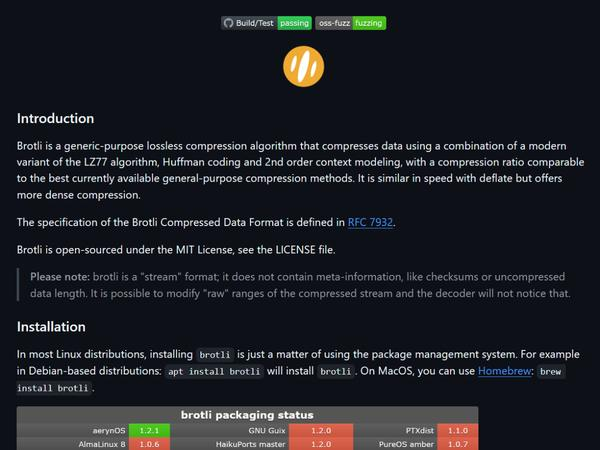
Google製圧縮技術Brotliに脆弱性「HTTP2Shell」、対応急務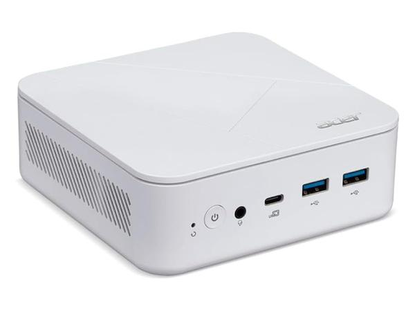
ミニPC「Revo Box」がRyzen搭載で復活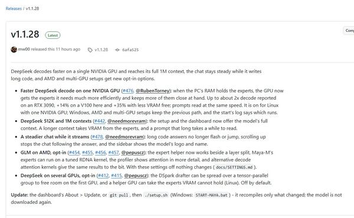
748BのDeepSeekがGPU 1枚でさらに高速に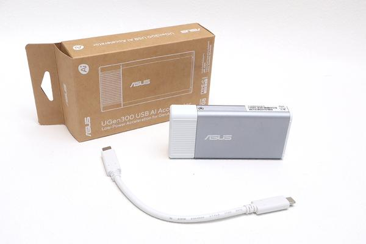
見た目はUSB SSD、中身はAIプロセッサ ASUS「UGen300」